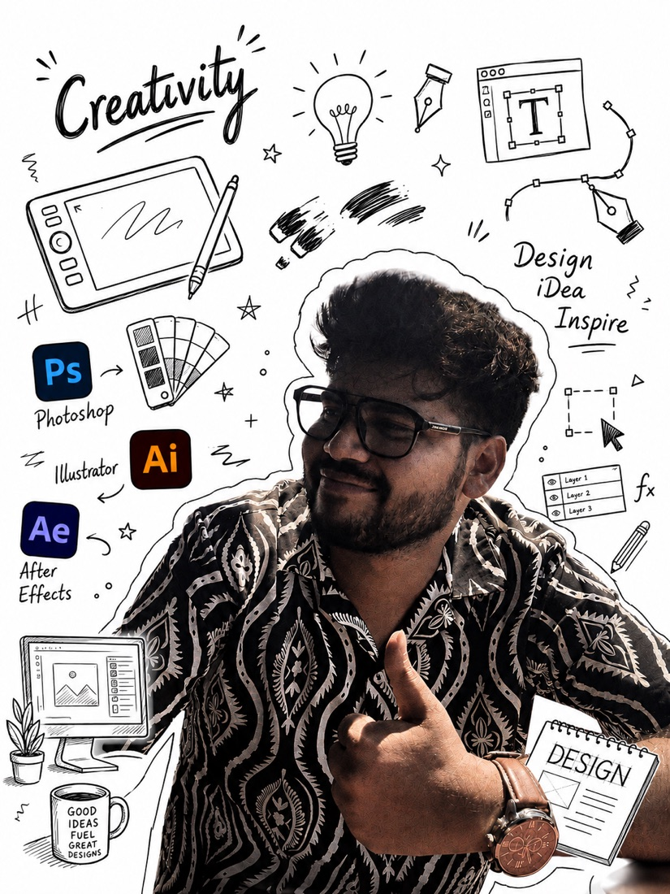

Mechanical Engineer · Graphic Designer & Animator · Content Developer & Published Researcher
Mechanical Engineering graduate with a Computer Science minor — over a year and a half of experience in process control, manufacturing operations and data-driven optimization, alongside a parallel life in graphic design, photography and competitive programming.

Skilled in C/C++ and Java, fluent in data analysis with Power BI, Looker Studio, Tableau and SQL — active in competitive programming, with a keen interest in learning new technologies, graphic designing and photography.
Education and work experience — most recent first.
Awards, honours and the activities that filled the margins outside the day job.
240+ hours educating underprivileged children; active in Covid Relief, Bihar Flood Relief and Pre-RD Camp campaigns.
1 / 200+ employees honoured for commissioning the new twin strand caster; also won the Shabbash award for record-time re-startup.
Led a team of 50+ individuals for the Annual Sports Fest's Design & Merchandising; 20,000+ footfall and 8+ sponsors in 3 days.
Spearheaded Sponsorship, Content & Design teams across 4+ Major and 9+ Minor techno-cultural festivals.
4th / 200+ students; college team member across 6+ tournaments, 1/5 teams at Elegante, IIM Bodh Gaya.
Led 30+ individuals across 10+ technical events; founded and co-managed BITP Esports with 40+ athletes.
Runner-up in SIH 2020 (RFID smart parking); 4th position in 2022 (Random Encryption Generation).
Founded Pixy Lens & Pixel Artists, producing 300+ creatives; designed the school's Jubilee Logo & Flag.
Ranked 11 / 4000+ at Zonal Level (IIT KGP Khitiz).
Mentored 30+ students in graphic design, photography and filmmaking; led teams into 4+ competitions.